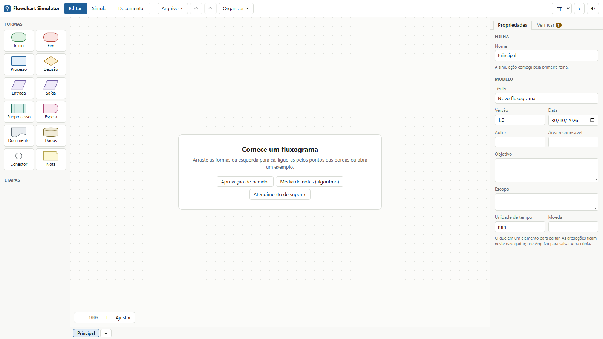
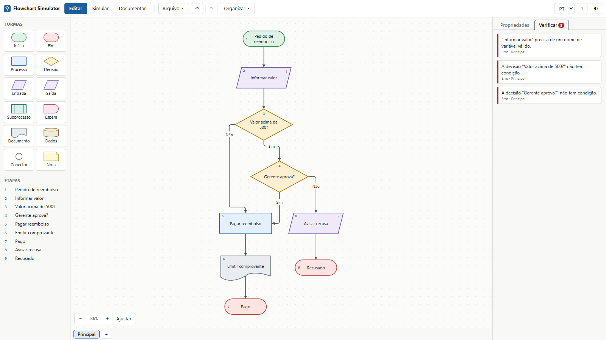
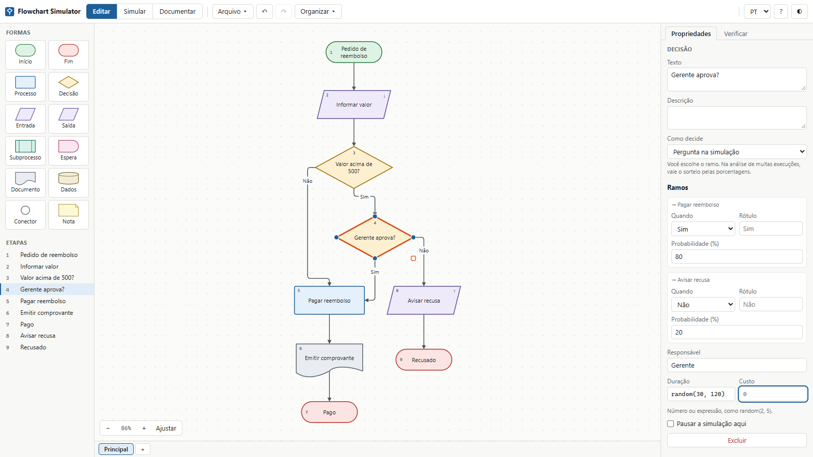
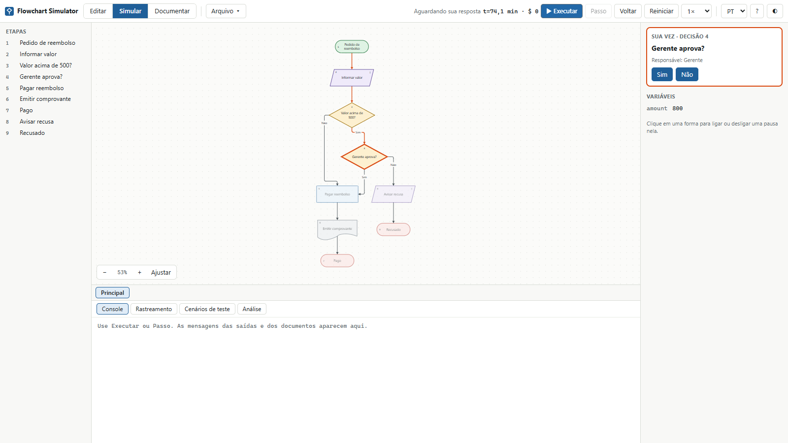
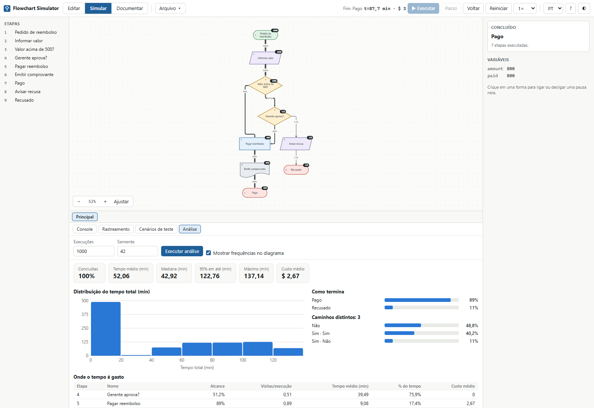
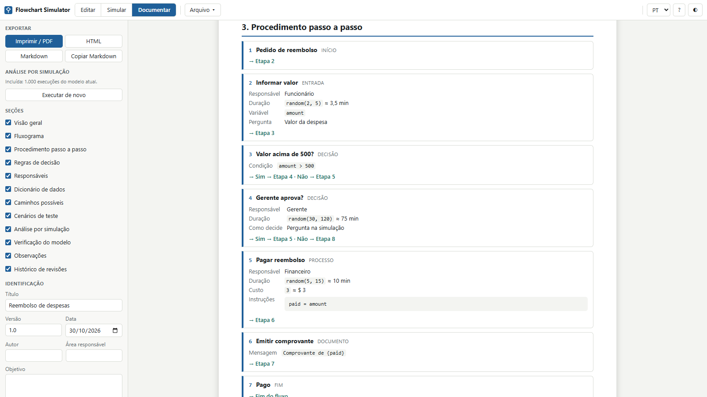
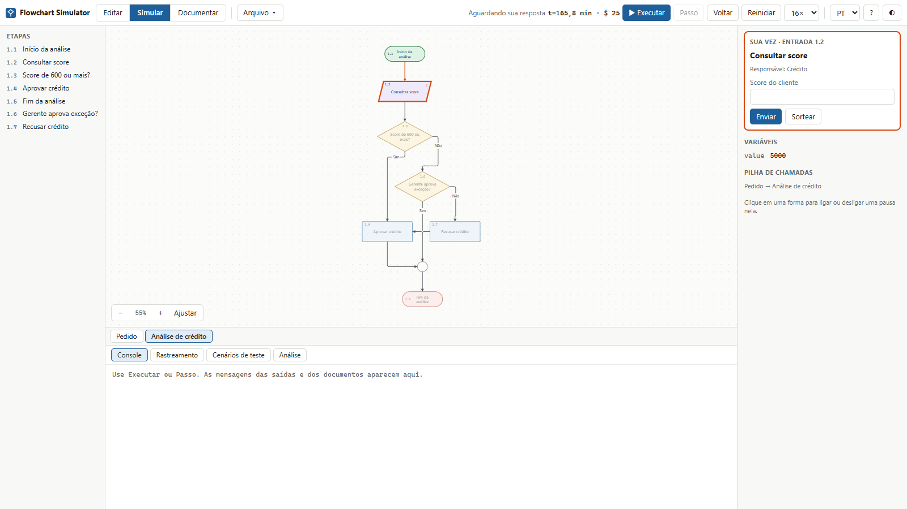

O que é o Flowchart Simulator
O Flowchart Simulator desenha fluxogramas, executa esses fluxogramas e gera a documentação deles. [1] É um único arquivo HTML, que funciona no navegador, sem instalação nem conta.

Um fluxograma parado mostra o caminho, mas não mostra se ele funciona. Aqui, o mesmo desenho responde a perguntas como: algum caminho fica sem saída, quanto tempo o processo leva e qual etapa consome esse tempo. Quando ele estiver certo, o app escreve o procedimento por você.
O trabalho acontece em três modos, escolhidos no alto da tela:
- Editar
- Desenhar, ligar as formas e preencher as propriedades.
- Simular
- Executar passo a passo, testar cenários e analisar muitas execuções.
- Documentar
- Ler, imprimir e exportar a documentação gerada a partir do modelo.
Como o app trata os seus dados
- Nada sai do seu computador. O arquivo bloqueia conexões de rede.
- O modelo fica no navegador. Ele é guardado automaticamente e reaparece ao reabrir o app. Para ter uma cópia própria, salve em JSON.
- Modelos não executam código. As expressões passam por um interpretador próprio, então abrir um modelo recebido de outra pessoa não roda JavaScript.
As formas
O app tem 12 formas, baseadas nos símbolos tradicionais de fluxograma. [3] [4] Cada uma tem um comportamento próprio na simulação.
| Forma | Na simulação |
|---|---|
| Início | Onde o fluxo começa. Cada folha tem um. Pode definir valores iniciais. |
| Fim | Onde o fluxo termina. Pode haver vários. Em uma folha chamada, devolve o controle a quem chamou. |
| Processo | Uma atividade ou um cálculo. Consome tempo e custo e executa instruções. |
| Decisão | Divide o fluxo em ramos. É a única forma com mais de uma saída. |
| Entrada | Pede um valor e o guarda em uma variável. |
| Saída | Escreve uma mensagem no console. |
| Subprocesso | Executa outra folha e depois continua. |
| Espera | Só consome tempo, como uma fila ou um prazo. |
| Documento | Registra um documento produzido, que aparece no console com o ícone 📄. |
| Dados | Representa a leitura ou gravação em uma base. Executa instruções, como o processo. O app não acessa bases reais. |
| Conector | Junta ramos sem fazer nada, e não recebe número de etapa. |
| Nota | Comentário. Não se liga a nada e não é executada, mas entra na documentação. |
Seu primeiro fluxograma: um reembolso
Em cerca de 20 minutos, você vai mapear um reembolso de despesas. O funcionário informa o valor. Até 500, o pagamento é direto; acima disso, o gerente decide.
1. Desenhe
- Se o app abrir com outro fluxograma, use Arquivo ▾ → Novo.
- Clique em Início, na lista de formas. Dê um duplo clique na forma criada, digite
Pedido de reembolsoe pressione Enter. - Passe o mouse sobre a forma: surgem pontos nas bordas. Arraste o ponto de baixo até uma área vazia e solte. No menu que aparece, escolha Entrada, digite
Informar valore pressione Enter. - Continue da mesma forma, seguindo a tabela. Se a tela ficar apertada, clique em Ajustar.
| Saindo de | Ponto | Forma no menu | Texto |
|---|---|---|---|
| Informar valor | baixo | Decisão | Valor acima de 500? |
| Valor acima de 500? | baixo | Decisão | Gerente aprova? |
| Valor acima de 500? | direita | Processo | Pagar reembolso |
| Gerente aprova? | direita | Solte sobre Pagar reembolso, sem menu | |
| Gerente aprova? | baixo | Saída | Avisar recusa |
| Avisar recusa | baixo | Fim | Recusado |
| Pagar reembolso | baixo | Documento | Emitir comprovante |
| Emitir comprovante | baixo | Fim | Pago |
A ordem importa nas decisões: a primeira ligação que sai de uma decisão vira Sim, e a segunda vira Não. Por isso, Valor acima de 500? tem Sim indo para o gerente. Se trocar, corrija no campo Quando do ramo.
Para arrumar o desenho, use Organizar ▾ → Na vertical.
2. Verifique
Clique em uma área vazia e abra a aba Verificar. Ela lista três erros, porque o desenho ainda não diz como decidir nem onde guardar o valor:
Informar valorprecisa de um nome de variável válido.- As duas decisões não têm condição.

3. Preencha as propriedades
Volte à aba Propriedades, clique em cada forma e preencha os campos. Pressione Tab para confirmar cada um.
| Forma | Campo | Valor |
|---|---|---|
| Informar valor | Variável | amount |
| Pergunta | Valor da despesa | |
| Valor na análise | random(10, 1000) | |
| Responsável | Funcionário | |
| Duração | random(2, 5) | |
| Valor acima de 500? | Condição | amount > 500 |
| Gerente aprova? | Como decide | Pergunta na simulação |
| Probabilidade (%) | 80 no ramo Sim e 20 no ramo Não | |
| Responsável | Gerente | |
| Duração | random(30, 120) | |
| Pagar reembolso | Instruções | paid = amount |
| Responsável | Financeiro | |
| Duração | random(5, 15) | |
| Custo | 3 | |
| Avisar recusa | Mensagem | Reembolso de {amount} recusado |
| Emitir comprovante | Mensagem | Comprovante de {paid} |

Clique em uma área vazia e preencha Título com Reembolso de despesas e Moeda com $. A aba Verificar agora mostra Nenhum problema encontrado.
4. Simule
- Clique no modo Simular e depois em Passo. O início é executado.
- Clique em Passo de novo. O painel da direita pergunta Valor da despesa. Digite
800e clique em Enviar. - Clique em ▶ Executar. O fluxo avança sozinho e para em
Gerente aprova?, à espera da sua resposta. - Clique em Sim. A execução termina com o status Fim: Pago, o custo de
$ 3na barra superior e a mensagemComprovante de 800no console. - Abra a aba Rastreamento: estão lá as 7 etapas executadas, com os valores e a resposta dada. Experimente Voltar para desfazer etapas.

5. Crie cenários de teste
Abra a aba Cenários de teste. Para cada linha da tabela, clique em + Novo cenário e preencha os campos.
| Cenário | Entradas | Respostas às decisões | Resultado esperado |
|---|---|---|---|
Valor pequeno | amount = 200 | paid == 200COST == 3 | |
Valor alto aprovado | amount = 800 | Sim | paid == 800 |
Valor alto recusado | amount = 800 | Não | END == "Recusado" |
Clique em Executar todos. Os três passam, e a cobertura fica em 100% das etapas e 100% dos ramos: nenhum caminho ficou sem teste.
6. Analise muitas execuções
Abra a aba Análise e clique em Executar análise, mantendo 1000 execuções e a semente 42. Seguindo a mesma ordem deste roteiro, os resultados serão estes:
| Indicador | Resultado | O que diz |
|---|---|---|
| Tempo médio | 52,06 min | A média das execuções. |
| Mediana | 42,92 min | Metade dos pedidos termina em até esse tempo. |
| 95% em até | 122,76 min | Só 5% dos pedidos demoram mais do que isso. |
| Como termina | Pago 89%, Recusado 11% | Cerca de metade dos valores passa de 500, e o gerente recusa 20% deles. |
| Onde o tempo é gasto | Gerente aprova?: 75,9% | Se o objetivo é agilizar, comece pela aprovação do gerente. |

7. Gere a documentação
Clique no modo Documentar. O procedimento, as regras de decisão, os responsáveis, o dicionário de dados, os caminhos, os cenários e a análise que você acabou de rodar já estão escritos. Clique em HTML para baixar reembolso-de-despesas.html.

Por fim, pressione Ctrl+S para guardar o modelo em um arquivo. O restante do tutorial detalha cada recurso.
A interface
- Barra superior
- Os três modos, Arquivo ▾, desfazer e refazer, Organizar ▾, idioma, ajuda e tema. Em Simular, traz também o relógio e os controles de execução.
- Formas
- A paleta. Arraste para o desenho, ou clique para colocar. Só aparece em Editar.
- Etapas
- Lista numerada das etapas da folha aberta. Clicar centraliza a forma.
- Abas de folhas
- Abaixo do desenho. Alternam entre as folhas, e + cria outra.
- Propriedades
- Campos do item selecionado. Sem seleção, mostra os dados da folha e do modelo.
- Verificar
- Problemas do modelo, com a contagem na própria aba.
Desenhar e organizar
| Para | Faça |
|---|---|
| Criar uma forma | Arraste da paleta ou clique nela. Com uma forma selecionada, o clique já cria a nova ligada a ela. |
| Criar um processo rápido | Duplo clique em uma área vazia. |
| Editar o texto | Duplo clique, ou F2. Enter confirma, Shift+Enter quebra a linha e Esc cancela. |
| Ligar duas formas | Arraste um ponto da borda até a outra forma. |
| Ligar a uma forma nova | Solte a ligação em uma área vazia e escolha a forma no menu. |
| Rotular uma ligação | Duplo clique nela, ou use o campo Rótulo. |
| Trocar a origem ou o destino | Selecione a ligação e arraste uma das pontas. Soltar perto de um ponto fixa aquele lado. |
| Devolver a rota ao app | Rota automática, nas propriedades da ligação. |
| Mover | Arraste, com encaixe em uma grade de 8 pontos, ou use as setas. |
| Redimensionar | Selecione a forma e arraste o quadrado do canto inferior direito. |
| Selecionar várias | Arraste no fundo, ou clique com Shift. |
| Rolar a vista | Roda do mouse. Com Shift, na horizontal. |
| Mover a vista | Botão do meio ou direito, ou Espaço + arrastar. |
| Aproximar | Ctrl + roda do mouse, ou os botões − e +. Ajustar enquadra a folha toda. |
| Arrumar tudo | Organizar ▾, na vertical ou na horizontal. Isso também solta os lados fixados nas ligações. |
As ligações são roteadas pelo app, que desvia das outras formas. O app recusa ligações sem sentido: uma forma com ela mesma, algo saindo do fim ou entrando no início, uma nota, uma ligação repetida ou uma segunda saída em uma forma que não é decisão.
Propriedades de cada forma
Comuns a quase todas
- Texto
- O que aparece na forma. A forma cresce se o texto não couber.
- Descrição
- Explicação para a documentação.
- Responsável
- Quem executa a etapa. O campo sugere os nomes já usados. Não existe em início e fim.
- Duração
- Tempo gasto. Aceita número ou expressão, como
random(2, 5). Vazio é zero. - Custo
- Custo da etapa, com as mesmas regras.
- Pausar a simulação aqui
- Ponto de parada para o botão ▶ Executar.
Específicas
| Forma | Campo | Função |
|---|---|---|
| Início, Processo, Dados | Instruções | Uma por linha: variável = expressão. |
| Entrada | Variável | Onde o valor é guardado. |
| Pergunta | O texto mostrado a quem responde. | |
| Valor na análise | Expressão usada quando ninguém está respondendo. | |
| Saída, Documento | Mensagem | Texto com expressões entre chaves, como Total: {total}. Vazio usa o texto da forma. |
| Subprocesso | Folha chamada | A folha a executar. Abrir folha vai até ela e Criar folha cria uma já ligada. |
| Decisão | Como decide, Condição, Ramos | Veja a seção de decisões. |
Sem nada selecionado, o painel mostra o nome da folha e os dados do modelo, como Título, Versão, Objetivo, Escopo, Unidade de tempo e Moeda. Eles abrem a documentação gerada.
Variáveis e expressões
As variáveis são criadas ao receber um valor e valem em todas as folhas. Os nomes aceitam letras, inclusive acentuadas, números e _, e diferenciam maiúsculas de minúsculas.
# instruções: uma por linha, com comentários depois de # ou //
total = price * qty
total += 10
items = [1, 2, 3]
items[0] = 5
label = qty > 1 ? "vários" : "um"| Tipo | Disponível |
|---|---|
| Valores | Números, textos entre aspas, true, false, null e listas como [1, 2] |
| Operadores | + - * / % ^, == != < <= > >=, and or not (ou && || !) e condição ? a : b |
| Atribuição | = += -= *= /=, em variáveis ou itens de lista |
| Números | min max abs round(x, casas) floor ceil sqrt pow |
| Listas | len sum avg push(lista, valor) contains a[0] |
| Textos | len upper lower trim substr(t, início, tamanho) contains str num. O + concatena. |
| Tempo | now() é o tempo simulado até ali. |
| Sorteios | random(a, b), randint(a, b), normal(média, desvio), triangular(mín, moda, máx), exponential(média) e chance(p), com p de 0 a 1 |
As listas começam na posição 0, e push devolve uma nova lista, então escreva a = push(a, x). Usar uma variável sem valor, dividir por zero ou sair dos limites de uma lista para a simulação com uma mensagem na etapa do erro. Funções desconhecidas e erros de digitação são indicados já na edição.
Na resposta a uma entrada, 800 e 3,5 viram números, true vira verdadeiro, [1, 2] vira lista e o restante vira texto.
Decisões e ramos
A decisão é a única forma com mais de uma saída. O campo Como decide tem três opções:
- Por condição
- A expressão em Condição escolhe o ramo sozinha. Serve para regras objetivas, como
amount > 500. - Por probabilidade
- O ramo é sorteado pelas porcentagens. Serve para situações que você só conhece em média, como “85% têm estoque”.
- Pergunta na simulação
- Você escolhe o ramo na hora. Nos cenários vale a resposta informada e, na análise, o sorteio pelas porcentagens.
Os tipos de ramo
O campo Quando diz quando o ramo é seguido em uma decisão por condição.
| Quando | É seguido se |
|---|---|
| Sim | O resultado é verdadeiro. |
| Não | O resultado é falso. |
| Valor igual a | O resultado é igual a Valor do ramo. Permite várias saídas, como 'A', 'B' e 'C'. |
| Senão | Nenhum outro ramo atende. Evita erro com valores não previstos. |
Se nenhum ramo atender, a simulação para com um erro. Em porcentagens, um ramo deixado em branco divide igualmente o que faltar para 100%. O Rótulo é opcional: vazio, mostra o nome do tipo, no idioma da interface.
Folhas e subprocessos
Um fluxograma longo fica mais legível se dividido em folhas. A forma Subprocesso chama outra folha; ao chegar ao fim dela, o fluxo volta e segue pela saída do subprocesso.
- Clique em + nas abas de folhas, ou selecione o subprocesso e use Criar folha.
- Desenhe a folha com o seu próprio início e pelo menos um fim.
- No subprocesso, escolha a Folha chamada.
As etapas das folhas seguintes são numeradas com prefixo, como 1.2. A simulação sempre começa pela primeira folha, muda de aba sozinha ao entrar em uma chamada e mostra o caminho em Pilha de chamadas. Abra o exemplo Aprovação de pedidos para ver isso funcionando.

Verificar o modelo
A aba Verificar é atualizada a cada mudança, e clicar em um item leva à forma.
| Tipo | O que aponta |
|---|---|
| Estrutura | Folha sem início ou sem fim, mais de um início, etapa inalcançável, etapa sem saída, mais de uma saída fora de decisão e etapa sem caminho até um fim. |
| Decisões | Menos de dois ramos, condição ausente, casos Sim e Não sem cobertura, probabilidades inválidas ou que não somam 100% e ramo sem rótulo. |
| Expressões | Erros de digitação em instruções, condições, mensagens, durações e custos. |
| Dados | Entrada sem variável válida e variável usada que nada define. |
| Folhas | Subprocesso sem destino, destino sem início e folha que chama a si mesma. |
Erros não bloqueiam a simulação: o app avisa, e ela para ao chegar neles. Assim, dá para testar um desenho ainda incompleto.
Simular passo a passo
| Controle | Função |
|---|---|
| ▶ Executar / ⏸ Pausar | Avança sozinho, até o fim, um ponto de parada ou uma pergunta. Depois da resposta, continua. |
| Passo | Executa só a próxima etapa, e ignora os pontos de parada. |
| Voltar | Desfaz a última etapa, inclusive valores e sorteios. |
| Reiniciar | Recomeça do início, com a mesma semente. |
| Velocidade | De 0.5× a 16×. Em 16×, sem a animação do percurso. |
Clique em uma forma para ligar ou desligar um ponto de parada, marcado por um círculo vermelho. A parada acontece antes de a etapa ser executada. Ao arrastar, a vista se move.
Ao responder a uma entrada, Sortear usa a expressão de Valor na análise. O painel da direita mostra as variáveis, com as que acabaram de mudar em destaque. O painel de baixo pode ter a altura ajustada pela borda superior.
- Console
- As mensagens de saídas e documentos, com o instante de cada uma.
- Rastreamento
- Cada etapa executada: tempo, resultado da condição, resposta dada e valores gravados. Mostra as últimas 500 linhas, e clicar em uma centraliza a forma.
Cenários de teste
Um cenário guarda entradas e o resultado esperado, para repetir o teste a cada mudança no fluxograma. Os cenários ficam salvos no modelo.
- Entradas
- Uma por linha:
nome = valor. Um valor simples serve a todas as leituras. Uma lista, comograde = [7, 8, 9], é lida um item por vez. - Resultado esperado
- Uma condição por linha. Além das variáveis, valem
END(texto do fim alcançado),TIME,COSTeSTEPS. - Respostas às decisões
- Os ramos das decisões perguntadas, na ordem, separados por vírgula, como
Sim, Não.
Executar roda só o cenário aberto e Executar todos roda a lista e calcula a cobertura. Assistir reproduz o cenário na animação; ali, o que ele não informa é perguntado a você.
Analisar muitas execuções
A aba Análise repete o fluxograma muitas vezes, até 100.000, sorteando durações, entradas e ramos. É o chamado método de Monte Carlo. [5] A mesma semente repete o mesmo resultado, e outra semente mostra a variação.
Para funcionar, cada Entrada precisa de Valor na análise. Sem ele, as execuções param com erro, e a causa aparece listada na própria aba.
- Concluídas
- Quantas execuções chegaram a um fim. Abaixo de 100%, veja os erros listados.
- Tempo médio, Mediana, 95% em até, Máximo
- O tempo total das execuções concluídas. Compare a média com a mediana: uma média bem maior indica poucos casos muito demorados.
- Custo médio
- A soma dos custos por execução.
- Histograma
- Quantas execuções caíram em cada faixa de tempo. Passe o mouse sobre uma barra para ver os valores.
- Como termina
- A porcentagem de cada fim.
- Caminhos distintos
- Os caminhos mais frequentes, descritos pelas respostas às decisões.
- Onde o tempo é gasto
- Por etapa: Alcance (quantas execuções passam por ela), Visitas/execução, tempo e custo médios e % do tempo. A etapa no topo é a primeira candidata a melhorar.
- Mostrar frequências no diagrama
- Exibe no desenho a porcentagem de cada etapa, com ligações mais grossas onde passa mais fluxo. Desliga sozinho quando você volta a executar passo a passo.
Para comparar alternativas, mude uma duração ou uma probabilidade, rode de novo com a mesma semente e compare os indicadores.
Gerar a documentação
O modo Documentar escreve o documento a partir do modelo. Em Seções, você escolhe o que entra.
| Seção | Conteúdo |
|---|---|
| Visão geral | Objetivo, escopo, identificação e totais, inclusive a complexidade ciclomática. [6] |
| Fluxograma | A imagem de cada folha, com as etapas numeradas. |
| Procedimento passo a passo | Cada etapa, com responsável, descrição, tempos, instruções e o destino de cada ramo. |
| Regras de decisão | Tabela de decisões, condições e ramos. |
| Responsáveis | Etapas, tempo e custo estimados de cada responsável. |
| Dicionário de dados | Cada variável: origem, onde é gravada e onde é lida. |
| Caminhos possíveis | As sequências de etapas até cada fim, com estimativas. Cada ligação entra uma vez por caminho. |
| Cenários de teste | Os cenários, com resultado e cobertura. |
| Análise por simulação | Os indicadores, o histograma e as tabelas da análise. |
| Verificação do modelo | Os problemas ainda em aberto. |
| Observações | O texto das notas. Só aparece se houver notas. |
| Histórico de revisões | Uma linha por versão, no formato versão | data | autor | mudança. |
As estimativas usam o valor esperado de cada expressão: random(2, 5) conta como 3,5. Valores que dependem de variáveis aparecem como —.
Formatos
- Imprimir / PDF
- Abre a impressão do navegador, sem os painéis do app. Escolha salvar em PDF.
- HTML
- Uma página única, com as imagens embutidas, para enviar ou publicar.
- Markdown
- Texto com o fluxograma em Mermaid, que plataformas como o GitHub desenham. [7] O histograma não entra.
- Copiar Markdown
- O mesmo conteúdo, na área de transferência.
O documento sai no idioma selecionado no app. Os textos que você digitou não são traduzidos.
Salvar, abrir e exportar
| Opção de Arquivo ▾ | O que faz |
|---|---|
| Novo | Inicia um fluxograma vazio, após pedir confirmação. |
| Abrir (.json)… | Carrega um modelo salvo. Arquivos de outro formato são recusados. |
| Salvar (.json) | Baixa o modelo, com folhas e cenários. Atalho: Ctrl+S. |
| Exportar folha (SVG) ou (PNG) | Baixa a imagem da folha aberta, sobre fundo branco. |
| Exportar folha (Mermaid) | Baixa a folha aberta como texto Mermaid. As notas não entram. |
| Exemplos | Abrem Aprovação de pedidos, Média de notas (algoritmo) e Atendimento de suporte. |
Atalhos de teclado
| Onde | Tecla | Ação |
|---|---|---|
| Todos os modos | Ctrl+S | Salvar o modelo |
| Todos os modos | ? ou F1 | Abrir a ajuda |
| Edição | Ctrl+Z / Ctrl+Y | Desfazer e refazer |
| Edição | Ctrl+C / X / V / D | Copiar, recortar, colar e duplicar |
| Edição | Ctrl+A | Selecionar todas as formas |
| Edição | Del | Excluir a seleção |
| Edição | F2 ou Enter | Editar o texto da forma selecionada |
| Edição | Setas (com Shift, passo maior) | Mover a seleção |
| Edição | Esc | Limpar a seleção |
| Simulação | Espaço | Executar ou pausar |
| Simulação | N | Avançar uma etapa |
| Simulação | B | Voltar uma etapa |
| Simulação | R | Reiniciar |
Limitações e solução de problemas
Limitações
- Um caminho por vez: não há etapas em paralelo nem filas disputando recursos. Para filas e gargalos, use o DFD Simulator. [2]
- Tempo sem conversão: a Unidade de tempo é só um rótulo. Use a mesma unidade em todo o modelo.
- Limite de etapas: cada execução para em 5.000 etapas, para deter laços sem saída.
- Copiar e colar: vale dentro do app aberto, e as ligações só são copiadas se as duas pontas estiverem selecionadas.
- Navegadores: o app foi testado no Chromium. O uso em outros navegadores e em telas de toque não foi testado.
Problemas comuns
| Sintoma | Causa provável | O que fazer |
|---|---|---|
| Ligação não permitida | A forma de origem já tem saída e não é uma decisão. | Insira uma decisão, ou exclua a ligação anterior. |
| Sim e Não estão trocados | A primeira ligação de uma decisão vira Sim. | Corrija o campo Quando em cada ramo. |
| A variável ainda não tem valor | O caminho percorrido não passou por onde ela é definida. | Defina um valor inicial nas Instruções do início. |
| Nenhum ramo atende ao valor | A condição devolveu algo não previsto nos ramos. | Acrescente um ramo Senão. |
| Parada após 5000 etapas | Um laço nunca sai. | Veja Rastreamento e revise a condição do laço. |
| Análise com erros e abaixo de 100% | Falta Valor na análise em uma entrada, ou há um erro em uma expressão. | Leia as mensagens listadas na aba Análise. |
| Cenário falha com “não é um ramo” | Uma resposta não corresponde ao rótulo do ramo. | Use o texto exato do rótulo em Respostas às decisões. |
| A análise sumiu da documentação | A lógica mudou depois da análise. | Execute a análise de novo. |
| Etapas com — nas estimativas | A duração ou o custo depende de uma variável. | É esperado: a estimativa estática não conhece o valor. Use a análise. |
Revisão rápida
Tente responder antes de abrir cada pergunta.
1. Por que um processo não pode ter duas saídas?
Porque o fluxo precisa saber para onde ir. Quem escolhe entre caminhos é a decisão.
2. Qual é a diferença entre decidir por probabilidade e perguntar na simulação?
Na probabilidade, o ramo é sempre sorteado. Na pergunta, você escolhe durante a simulação, e o sorteio só vale nas execuções sem ninguém para responder.
3. Para que serve o campo Valor na análise?
Ele fornece o valor de uma entrada quando ninguém está respondendo. Sem ele, a análise de muitas execuções para com erro nessa entrada.
4. O que significa 100% de cobertura de ramos?
Que os cenários, juntos, passaram por todos os ramos de todas as decisões. Isso não prova que as regras estão certas, só que nenhum ramo ficou sem ser executado.
5. Por que usar a mesma semente ao comparar duas versões?
Porque a semente fixa a sequência de sorteios, e assim a diferença vem mais da mudança feita do que do acaso.
6. Você mudou uma duração e a análise sumiu da documentação. Por quê?
Porque os números antigos não valem mais para a nova lógica. Execute a análise de novo para que ela volte ao documento.
Referências
- Giovani Perotto Mesquita, “Flowchart Simulator”, aplicativo em um único arquivo HTML, giovanipm.github.io/flowchart-simulator.html.
- Giovani Perotto Mesquita, “DFD Simulator: tutorial”, tutorial deste site, giovanipm.github.io/DFDSimulator.html.
- ISO, ISO 5807:1985: Information processing — Documentation symbols and conventions for data, program and system flowcharts, program network charts and system resources charts, norma, 1985.
- Wikipedia (em inglês), “Flowchart”, acesso em 30/10/2026, en.wikipedia.org/wiki/Flowchart.
- Wikipedia (em inglês), “Monte Carlo method”, acesso em 30/10/2026, en.wikipedia.org/wiki/Monte_Carlo_method.
- Thomas J. McCabe, “A Complexity Measure”, IEEE Transactions on Software Engineering, SE-2(4), 1976, p. 308–320.
- Mermaid, “Flowcharts Syntax”, documentação, acesso em 30/10/2026, mermaid.js.org/syntax/flowchart.html.